Motto: “Sa-wat-dee-khrap” not “Sweaty Crap”
The motto is phonetically how you say “Hello” politely as a male speaker in Thai. I usually just said “hi”. This column is a recounting of my trip to Thailand and my engagement to +Melissa Hill.
This post will have several pages worth of information, pictures, and one video. To keep the length of this post somewhat manageable, though, I’m going to employ my favorite space-saving technique:.
The Trip Out:
I flew from Kansas City to Los Angeles, to Tokyo, to Bangkok. I flew Delta. I will probably use them from now on if I have the option. More about Delta will follow in my next column (I already have it planned) I stayed up the night before my initial flight at 6am to try to nip jetlag in the bud. I couldn’t sleep on the plane due to being 6’8” to 6’9” and generally giddiness. I had been awake for ~43 hours straight when I reached Japan. I took a sleeping pill when my plane was about to board. My plane was delayed. 3 hours. I fell asleep on a bench. I woke up as my plane was boarding - didn’t alert Melissa I did, in fact, wake up. I arrived in Bangkok around 3am (as opposed to the 11:30pm that was supposed to be) Total transit time: Around 36 hours. Somehow I missed Melissa, who was waiting for me at my gate. I couldn’t get a password for the WiFi. Melissa thought I was still asleep in Japan. I walked around BKK airport for an hour and fifteen minutes without any means to contact anyone before we ran across each other. We hopped in a Taxi. I was, in a word, zonked.
Initial Impressions:
Melissa’s place Really nice, actually. It was like a really good dorm room. She lives in an apartment without a roommate in Salaya, Thailand. Mahidol University The Univeristy at which Melissa works, based out of Salaya, is also really nice. The campus was huge. Hard to compare it to KU, but it seemed to be of the same approximate size. Wikipedia just told me they have 26 thousand students. KU has 29 thousand. Close! Bangkok Bangkok was weirdly exactly like I expected and nothing at all like I expected. There are hundreds of skyscrapers littered throughout the landscape… but they are not all congregated in any one main area. You have vast expanses of small buildings, slums, parks, rivers, and favelas in between the huge, tall buildings. But no matter which way you look, you see sky scrappers in the distance. The heat was bad, but not “the worst thing I’ve ever experienced” like I was expecting. Melissa said she was intentionally making it seem worse than it really was so I would be prepared. There were monks walking around, but no elephants. I was only half disappointed.
Temples:
The Grand Palace The Grand Palace is huge. Huge and golden. I’ve been to several big churches in the United States - but nothing I’ve ever seen even begins to compare to the Grand Palace. It’s… astonishing. There were a seemingly unending amount of shrines, buildings, artwork, and people. The place was extremely dense with tourists. It was really hot and bright. Wat Po Although not as huge as the Grand Palace - still huge. Less vertical. Less dense in general. This included less people - which I loved. Full of art and history and golden and rock statues of monks, little Buddhas, and the largest Buddha in Thailand. 32 feet tall. 141 feet long. (he’s laying on his side) There were many other temples we could have/were going to see; but that was the hottest day of the trip. This was exacerbated by the fact that we had to wear long pants to enter some of the temples.
Malls:
Being American, I enjoyed the malls quite a lot. There are 4 malls that are more or less in a line near the middle of Bangkok in Siam Square. The malls decreased in “niceness” and “hugeness” as you went down the line from East to West. The malls were the best example of just how much influence American culture has in other countries. I was sitting in the food court across from a Subway, Auntie Annes, Hagaan Daz, KFC, and a Burger King. The menus weren’t quite the same - but everything was in English. You had to really look to find any Thai. The largest mall, Siam Paragon, is 7 stories tall and houses hundreds of stores. American stores like H&M, The Gap, Forever 21, and probably others that I don’t even know about. Other stores of note: Samsung, Sony, Ferarri (with actual cars), Prada, Versache, I realize it was largely targeted at foreigners (“Farang” as they said), but it was still quite surprising.
Beaches:
The natural beauty of the jungles and beaches of Thailand cannot begin to be described in words. I would pit the beaches at the Similan and Surin Marine National Parks against any beach anywhere. Anywhere.
The sand was almost purely white and ultrafine. Individual grains of sand were impossible to see. It was like walking on powder. It was hard to tell where the sand ended and the water began.
The water was clear and full of coral and fish. Snorkeling there was unreal.
I hated snorkeling at first. After my brain realized I wasn’t drowning, though, it was awesome. Tandem snorkeling with Melissa is an experience I’ll never forget.
Probably the most impressive and great thing about the beaches was just how empty they were. There were hundreds and hundreds of feet of beach and less than 100 people there. You’ll notice in the pictures later there are hardly any other people in the background. Try doing that in Florida.
Overall Impressions of the People in Thailand:
The Thais are unanimously nice and courteous. They mind their own business and leave you be.
This wasn’t just something I realized as an afterthought - this was something that shocked me every day I was there.
I wish America was halfway near that laid back.
People in Thailand are shorter in general. When we were riding one of the many forms of public transportation we used, Melissa was often (but not always) the second tallest person person or close to being the second tallest person on board. Having said that - they also react hilariously to tall people. They were never rude about it - but I could definitely tell they don’t routinely see people who can’t stand up on their buses.
Speaking of public transit - it is used by normal people over there. Here (at least where I live) it seems like the bus stop is frequented only by the sketchiest of individual. I would pick bus stops in Thailand over Kansas City 100 days out of 100.
Ladyboys exist.
Trip back:
The trip back was slightly shorter than the trip there. Probably 32 hours. It seemed much shorter, though, because I was travelling with the sun. I left Thailand and arrived in America on the same day, technically. The landing in Japan was rough. Like, “I let out a bit of a yelp and grabbed the seat in front of me with white knuckles” rough. They warned us about high winds ahead of time. They weren’t joking. I figured out the seats on the international flights CAN be sleepable if I sat a certain way.
The other thing I wanted to write about is the biggest thing that happened during the whole trip, if not the biggest thing that has ever happened in my life:
I got engaged.
During the middle day of the trip, the 2nd of the three days we spent in the jungles and the beaches, I used the natural beauty of the landscape as the setting for the biggest question you ever get to ask anyone… Will you marry me?
She said yes.
(Check the quote at the end of this column for the actual transcript… I left out the long, stunned silence that occurred first.)
I manged to find a secluded section of the beach with a fantastic view. It was in the corner, near a group of interesting rocks. While she was taking pictures and enjoying the scenery, I was setting up a video camera and getting the ring out from it’s hiding spot deep within our bag. The whole thing is on video.
Afterwards, we took several photos. Both on the beach, and later at the Kuraburi resort. This photo was taken were I asked her.
People in Thailand apparently love jump photos. This is for you guys.
Now, I present to you a clip-video from the craziest and best week of my life:
(editor’s note from the future: this video lost to time)
Melissa and I are engaged to be wed. We have taken the next step towards the rest of our lives.. and I can’t wait.
That’s Melissa. She’s my fiancé.
I was going to do a Top 15 favorite photos. I was going to just link to an album of 50 photos and do a Top 5 photos. But I think, instead, I’ll break the trip down into it’s main four parts - each with it’s own Photo Top 5.
Top 5: Photos from Bangkok/Salaya
- A Photosphere that was taken on the way to get a world-famous Thai massage.
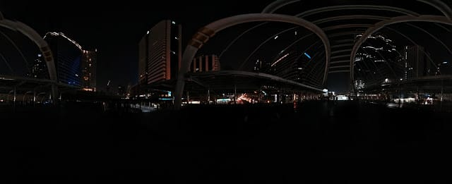
- Melissa and the reason she’s in Thailand to begin with.
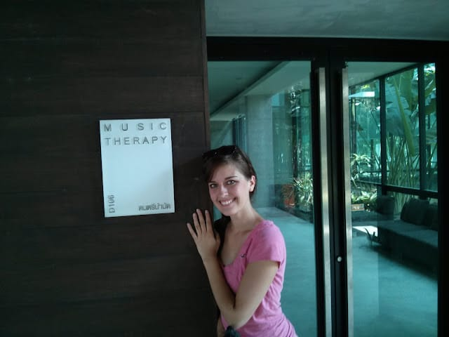
- This gong is about 10 feet away from the previous picture - and yes, I did really hit it.
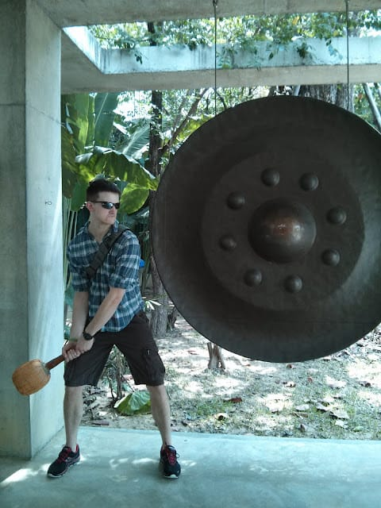
- We have dozens of pictures from the malls, but I like this one best. It was the Me-est thing we found!
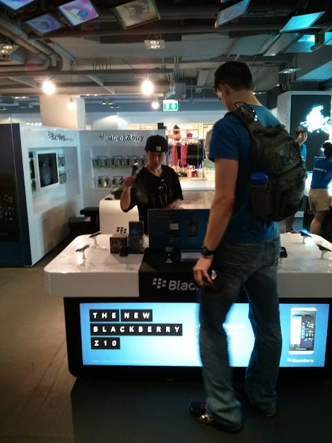
- A bad representation of the Bangkok skyline (I don’t really have a good one) behind an attractive couple.
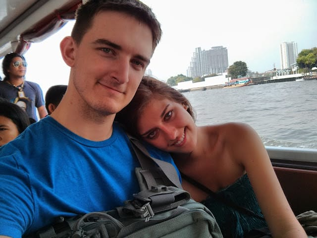
Top 5: Photos from the Temples
- A great introductory picture. Thank you, Melissa, for suggesting it.
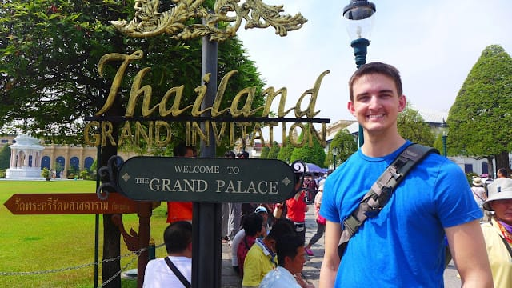
- Me Wai-ing within the walls of the Grand Palace (the palace is mostly behind the camera).
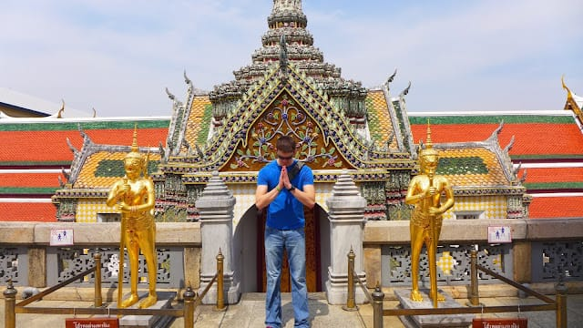
- Pretty self-explanatory.
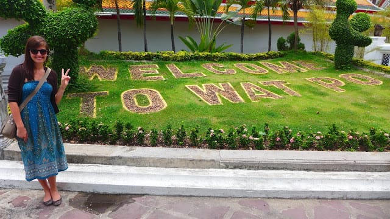
- These two pictures together paint a single picture of what it was like that day.
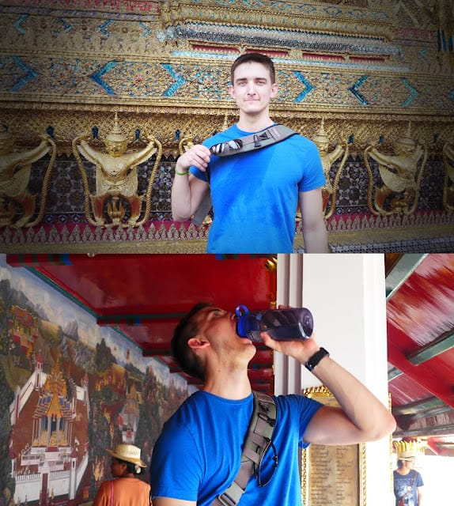
- And these two pictures together paint a single picture of just how immature I am.
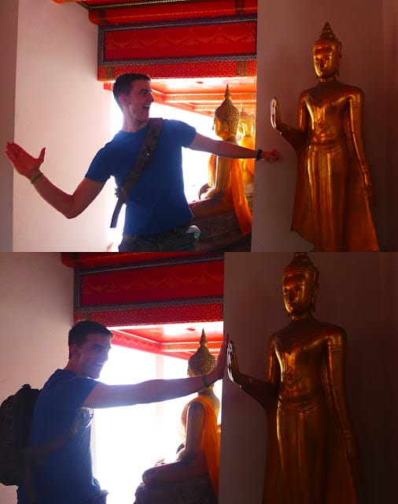
Top 5: Photos from Beaches
- This picture was taken within 5 minutes of our first glimpse of the ocean (which is behind the camera).
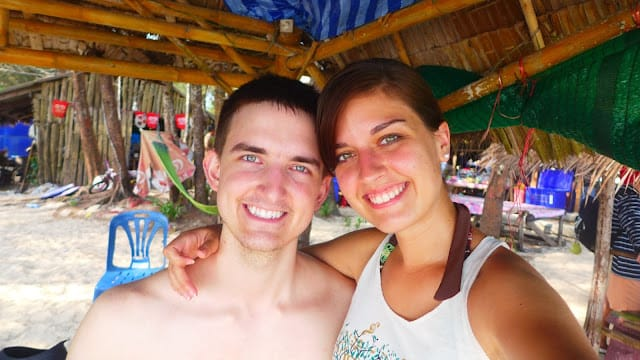
- Melissa recreating her favorite photo from her first trip to Thailand at a new beach.
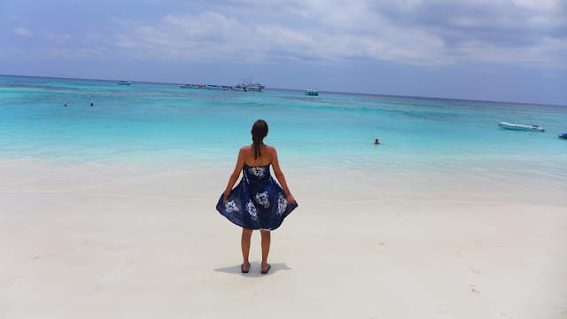
- There were only about 25 people on the trip - I think Melissa was the first in the water.
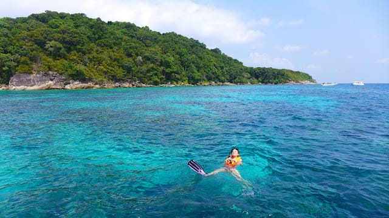
- Mermaid and Mer-man. I totally pulled it off better, by the way.
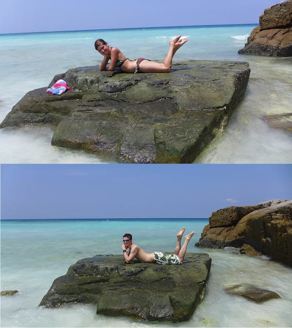
- One of the first photos we took after the proposal - before the jump shot from before.
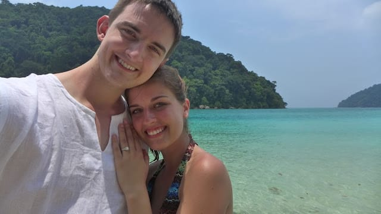
Top 5: Engagement Photos
- I do not like this photo. Amy said I “had” to post it, though. So I did cause she’s tough.
- Arguably my favorite photo that was posed for (I’m terrible at posing).
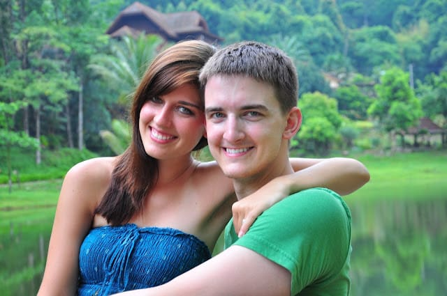
- Correction: I like this one better.
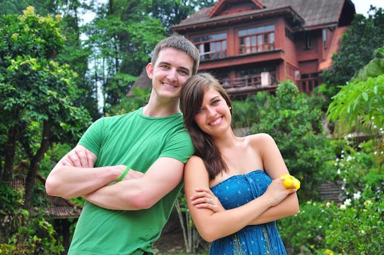
- I’m glad she likes me.
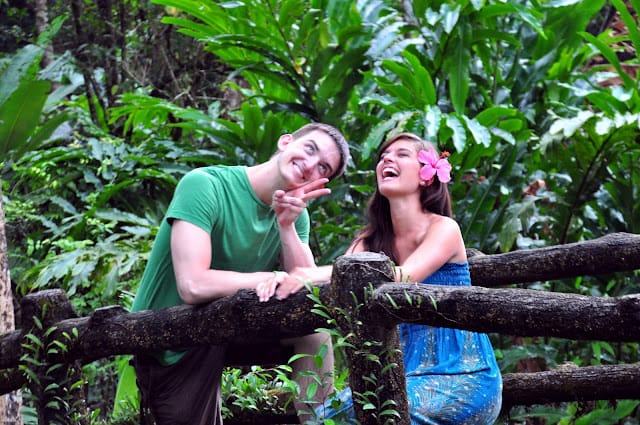
- A genuine and natural smile from a genuine and natural beauty.
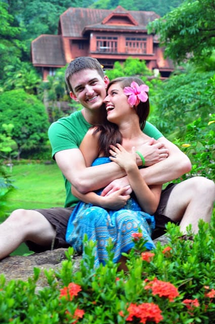
Quote:
“Of course I’ll marry you, yes!” Melissa